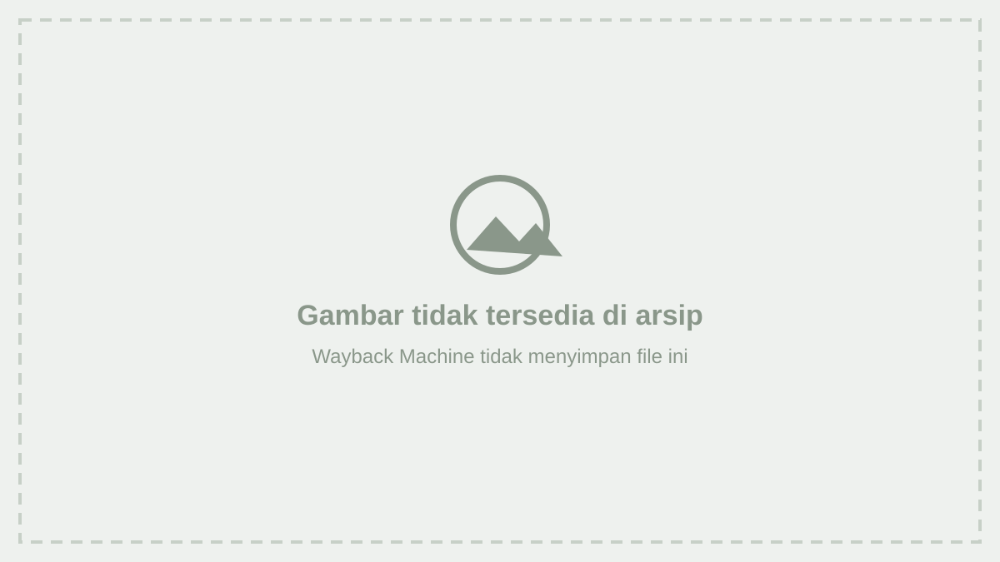

Formulir tidak aktif pada versi statis. Arsip ini tidak memiliki server untuk mengirim pesan. Silakan hubungi Yayasan At-Taufiq di (0341) 411105 atau datang langsung ke Jl. Sanan 70, Purwantoro, Blimbing, Malang.
Rekening Donasi
Bank BTN Syariah kantor cabang Malang
NOMOR REKENING : 7062073187
Bank BNI Syariah kantor cabang Malang
NOMOR REKENING : 0127054102